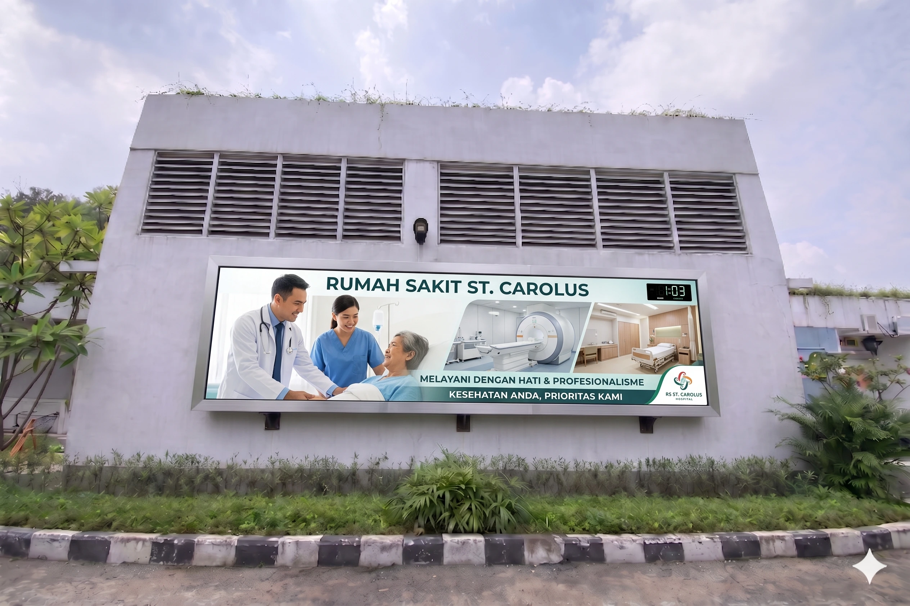

Kesehatan 📍 Jakarta Pusat
🏢 120 Unit • Pengadaan Sentral
Instalasi Videotron Outdoor untuk Media Promosi
Pengadaan dan pemasangan videotron outdoor dengan tampilan visual yang terang dan jelas untuk mendukung kebutuhan advertising dan promosi di area dengan tingkat aktivitas tinggi.